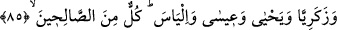
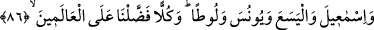

85. Zekeriyya, Yahya, İsa ve İlyas’ı da (doğru yola iletmiştik). Hepsi de (sâlih)
iyilerden idi.
“Zekeriyyâ, Yahya, İsâ ve İlyas’a da” yol göstermiştik.
Zekeriyyâ (a.s.) Âzen’in oğludur. Soyu, Süleyman (a.s.)’a ulaşır. Yahya (a.s.) ise,
Zekeriyyâ (a.s.)’ın oğludur.
İsâ (a.s.) ise İsrailoğullarının krallarından Masânoğullarından İmran kızı Meryem’in
oğludur.
Hz. İsa’nın annesine nisbet edilerek anılması, zürriyetin kız çocuklarına da şâmil
olduğuna delalet eder. Nitekim Hz. Hasan ve Hüseyin (r.anhüma), Peygamberlerin
Efendisi Hz. Muhammed (s.a.) in zürriyetinden sayılırlar. Halbuki Rasûlullah
Efendimiz’e soyca, anneleri ile bağlanırlar. Onlara eziyet eden, Rasûlullah (s.a.)’ın
zürriyetine eziyet etmiş olur.
Fakîr İsmâil Hakkı der ki: Şu halde anne tarafından olan neseb de sahih ve
muteberdir. Seyyidliği baba tarafından olan muteber olduğu gibi, anne tarafından olan
da muteberdir. Şu halde muteber olan hangi taraftan olursa olsun silsilesinin Hz. Hasan
veya Hz. Hüseyin’e ulaşmasıdır.
İlyas (a.s.), Hz. Mûsâ’nın ağabeyi olan Hârûn (a.s.)’ın kardeşinin oğludur.
Beğavî der ki: “Sahih olan şudur ki, İlyas (a.s.), İdris (a.s.) değildir. Çünkü Allah onu
(İlyas’ı) Nuh’un oğulları içerisinde anmıştır. İdris (a.s.) ise Hz. Nuh’un babasının
dedesidir.
“Hepsi iyilerden idi.” Salih olmada kemâle ermişlerdi. Sâlihlik, gerekli olanları
yapmak ve lüzumsuz davranışlardan sakınmakla olur.
86. İsmail, Elyesa’, Yunus ve Lût’u da (hidayete erdirdik). Hepsini âlemlere üstün
kıldık.
“Nuh’a doğru yolu gösterdiğimiz gibi “İsmâil, El-Yesa, Yunus ve Lût’a da (yol
gösterdik).”
İsmâil (a.s.), İbrahim (a.s.)’ın oğludur. Belki de burada Hz. İsmail’in, İbrahim (a.s.)’ın
diğer zürriyetinden ayrı olarak anılması, Rasûlullah (s.a.)’in Hz. İsmail’in soyundan
gelmesindendir. Bütün kainat, Rasûlullah’ın varlığına bağlıdır. Bu sebeple Muhammed
(s.a.)’in yüce şerefine binaen Allah Teâlâ İsmail (a.s.)’ın varlığını burada, babası
İbrahim (a.s.)’in varlığına, yine onun hidayetini babasının hidayetine tâbi kılmamıştır.
Bu yüzden onu diğerlerinden ayırmış ve sonra zikretmiştir.